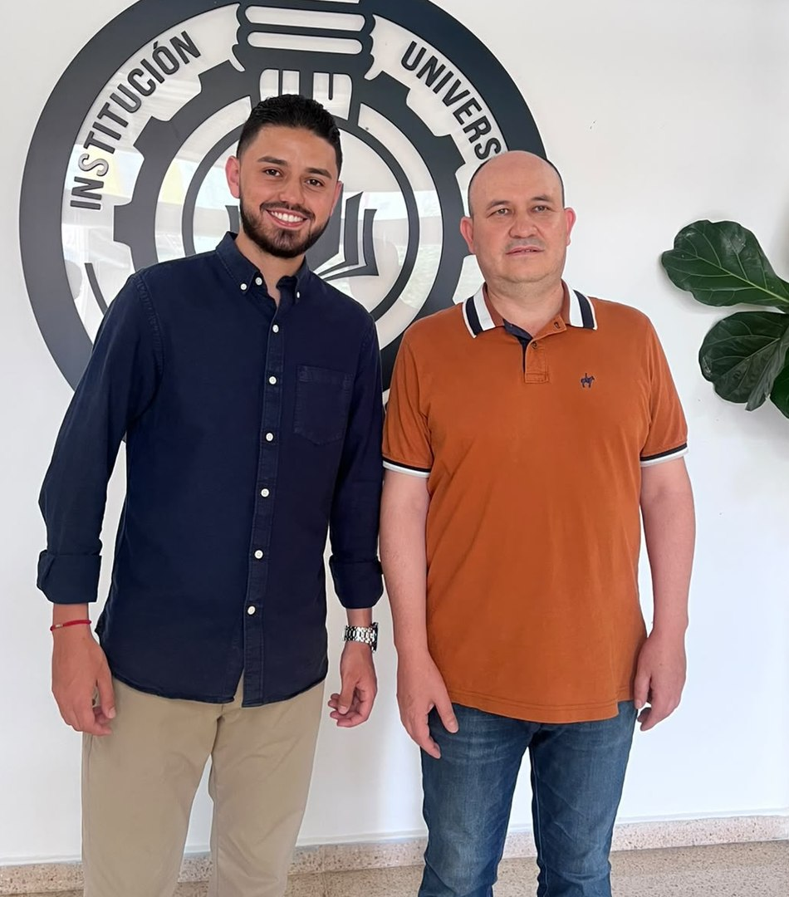

Escuchamos
Recogemos inquietudes y propuestas de los diferentes programas de ingeniería.
Queremos una representación que escuche, conecte oportunidades y convierta las ideas en propuestas con seguimiento.

Propuestas concretas para representar las necesidades estudiantiles e impulsar iniciativas desde las competencias del Consejo de Facultad.
✳ Proponer también es ser responsables. Un representante no puede prometer empleos, aprobar convenios ni cambiar reglamentos por su cuenta. Sí puede escuchar, presentar iniciativas, articular con las dependencias y hacer seguimiento.
Recogemos inquietudes y propuestas de los diferentes programas de ingeniería.
Organizamos los temas según su alcance, recurrencia y posibilidad de gestión.
Llevamos los asuntos a los espacios competentes e informamos sobre sus avances.
Queremos que conozcas a las personas detrás de la Plancha 3. Nuestras trayectorias son distintas; el compromiso es construir una representación cercana y transparente.
¿Qué mejorarías de la experiencia académica? Queremos escucharte.
Plancha 3 · Escuchar. Conectar. Proponer.